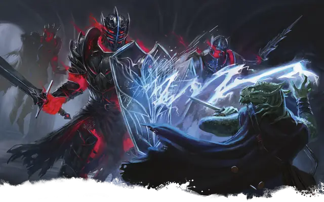

Шлемоносный ужас
Helmed Horror
Средний Конструкт, Нейтральный

Класс Защиты 20 Инициатива +3 (13)
Хиты 67 (9к8 + 27)
Скорость 30 футов, Полёта 30 футов (парит)
| мод | спас | ||
|---|---|---|---|
| СИЛ | 18 | +4 | +4 |
| ЛОВ | 13 | +1 | +1 |
| ТЕЛ | 16 | +3 | +3 |
| мод | спас | ||
|---|---|---|---|
| ИНТ | 10 | +0 | +0 |
| МДР | 10 | +0 | +0 |
| ХАР | 10 | +0 | +0 |
Иммунитеты Некротический, Яд; Испуганный, Истощение, Оглохший, Окаменевший, Ослеплённый, Отравленный, Очарованный, Ошеломлённый, Парализованный
Чувства пассивное Восприятие 14, Слепое зрение 60 футов
Языки знает Общий плюс один другой язык, но не говорит
Опасность 4 (1 100 опыта; БВ +2)
Особенности
Сопротивление магии. Шлемоносный ужас совершает с Преимуществом спасброски от заклинаний и прочих магических эффектов.
Иммунитет к заклинаниям. Шлемоносный ужас невосприимчив к трём заклинаниям по выбору его создателя. Обычно это Волшебная стрела, Молния и Нагрев металла.
Действия
Мультиатака. Шлемоносный ужас совершает две атаки Волшебным мечом.
Волшебный меч. Бросок рукопашной атаки: +6, досягаемость 5 фт. Попадание: 8 (1к8 + 4) Рубящего урона плюс 5 (1к10) Силового урона.
Бонус мастерства +2
Среда обитания Любая
Сокровища Оружейные
Шлемоносный ужас
Латы с целеустремлённостью живого воина
Шлемоносные ужасы — это доспехи, оживлённые магией, но отнюдь не бездумные автоматы: за броней скрывается солдатская хитрость и устойчивость против разрушительной магии. Хотя их название намекает на что-то зловещее, служат эти создания своим творцам преданно. Шлемоносных ужасов также называют стражами рока или духовными доспехами. Чаще всего они не демонстрируют никаких признаков личности, но бывают исключения.
Шлемоносные ужасы выполняют самые разные поручения. Совершите бросок по таблице «Приказы шлемоносных ужасов» для вдохновения или определите сами, какой приказ отдан шлемоносному ужасу.
Приказы шлемоносных ужасов
| 1к6 | Шлемоносному ужасу отдан приказ… |
| 1 | Переносить паланкин создателя по воздуху. |
| 2 | Оберегать ценное сокровище или часть лат, держа его в себе. |
| 3 | Подражать мёртвому или заточённому герою, использовав его броню и оружие. |
| 4 | Быть чернорабочим или слугой. |
| 5 | Служить в легионе, созданном из доспехов древних защитников страны. |
| 6 | Стоять стражем в галерее среди обычных доспехов. |